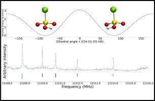
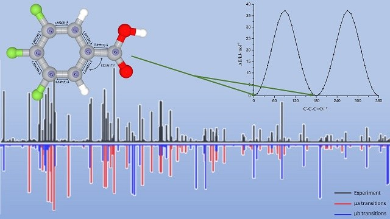
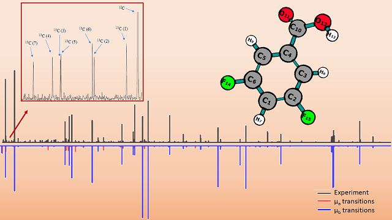
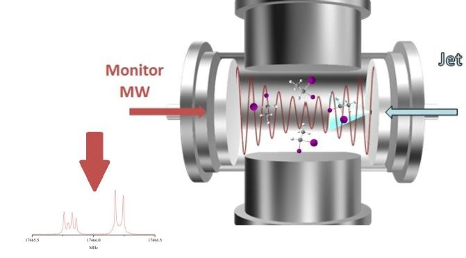
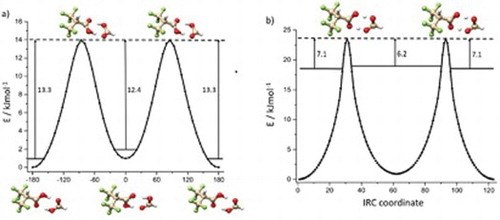

Microwave spectroscopy and large amplitude motion of chlorosulfonic acid (ClSO2OH)
Aaron J. Reynolds, Diego E. Rodriguez, Wei Lin, Kenneth R. Leopold
The high-resolution rotational spectrum of chlorosulfonic acid (ClSO2OH) has been studied using both broadband and cavity-based Fourier transform microwave spectrometers over the frequency range of 5–18 GHz. a-, b-, and c-type transitions have been recorded for both the 35Cl and 37Cl isotopologues. The observation of c-type lines establishes that the molecule lacks a plane of symmetry and suggests that the OH group can undergo large amplitude motion between equivalent structures.
Interconversion between these structures can be achieved via internal rotation through two inequivalent barriers occurring at Cl–S–O–H torsional angles of 0 or 180 degrees. As in previous work on triflic and methanesulfonic acids, two states are observed and are treated as tunneling states which are presumed to arise primarily due to motion through the lower of the two barriers. The a- and c-type transitions occur within each of these states while the b-type transitions cross between them. Rotational, centrifugal distortion, and chlorine nuclear quadrupole coupling constants, as well as the energy difference between the two tunneling states and associated coupling constants, have been determined. The experimental tunneling energies, ΔE, for the 35Cl and 37Cl isotopologues are 52.6926(16) MHz and 52.6397(46) MHz, respectively.
Quantum chemical calculations were carried out using MP2 and B3LYP density functional theory (DFT) methods with an aug-cc-pVTZ basis set. The rotational constants from the optimized structures were in good agreement with the experimental values. The lowest energy barrier for OH motion was calculated to be 2.6 kcal/mol at the MP2/aug-cc-PVTZ level. The effects of the large amplitude motion are similar to those recently reported for triflic acid (CF3SO2OH) and methanesulfonic acid (CH3SO2OH). However, while the tunneling splittings in chlorosulfonic and triflic acids are virtually identical, they differ significantly from that of methanesulfonic acid.
The molecular viewer requires JavaScript and WebGL. The research figure above remains available.
Chlorosulfonic acid ·
PubChem CID 24638
Drag to rotate; scroll or pinch to zoom. Reference structure, not a fitted experimental geometry.
Conformational landscapes of symmetrically fluorine-substituted benzoic acids II: Calculations and measurements for the rotational spectrum and structure of 3,4,5-trifluorobenzoic acid
Jingling Hong, Alitza Gracia, Savannah Romero, Mingfei Zhou, Wei Lin, Weixing Li
Calculations on the structure of 3,4,5-trifluorobenzoic acid were made using the Gaussian 16 program. The potential energy surfaces were scanned along C-C-C=O and O=C-O-H dihedral angles at the B3LYP/6-311G level to analyze its conformational landscape. Two conformations were identified and reoptimized at the B3LYP/aug-cc-pVTZ level. The result indicates that 3,4,5-trifluorobenzoic acid prefers a planar structure in its global minimum conformation.
The pure rotational spectra of 3,4,5-trifluorobenzoic acid were measured in the frequency range of 6 to 12.5 GHz using a chirped pulse Fourier transform microwave (CP-FTMW) spectrometer. The spectra of the parent, seven 13C, and one deuterium singly substituted isotopologues were analyzed and fitted to measurement accuracy for a semi-rigid asymmetric top molecule. The rotational constants and centrifugal distortion constants were accurately determined.
For the parent isotopologue, the rotational constants are A = 1535.31408(32) MHz, B = 650.31751(16) MHz, and C = 456.98499(12) MHz. The effective structure of its ground vibrational state was determined from the spectra of the mono-substituted isotopologues. Ultimately, the agreement between the calculated and experimental spectroscopic constants is excellent.
The molecular viewer requires JavaScript and WebGL. The research figure above remains available.
3,4,5-Trifluorobenzoic acid ·
PubChem CID 853154
Drag to rotate; scroll or pinch to zoom. Reference structure, not a fitted experimental geometry.
Conformational landscapes of symmetrically fluorine-substituted benzoic acids I: Microwave spectroscopic and theoretical studies on 3,5-difluorobenzoic acid
Alitza Gracia, Jingling Hong, Rebakah Arismendi, Mingfei Zhou, Weixing Li, Wei Lin
We report our combined theoretical and spectroscopic studies on 3,5-difluorobenzoic acid. Using a chirped pulse Fourier transform microwave (CP-FTMW) spectrometer, we recorded and analyzed the rotational spectrum spanning the frequency range of 6 - 12.5 GHz. Quantum chemical calculations were employed to analyze the conformational changes and landscapes of 3,5-difluorobenzoic acid. These calculations focused on studying the potential energy surfaces along the C-C-C=O and O=C-O-H dihedral angles at the B3LYP/6-311G level.
Based on the computational results, we identified the global minimum conformer 1 as well as the local minimum conformer 2. We discussed and interpreted the geometric structures of the relevant conformations, with a particular emphasis on the interactions between the carboxylic group and the substituted fluorine atoms. Furthermore, these findings were compared to benzoic acid in internal strains and acidities.
In our spectral analysis, we successfully identified conformer 1 and its seven 13C singly substituted isotopologues. We derived highly accurate rotational constants for 3,5-difluorobenzoic acid, displaying good agreement with computational results. We established the effective structure of its ground vibrational state using Kraitchman's equations. Similar to benzoic acid, the global minimum conformation of 3,5-difluorobenzoic acid adopts a planar structure, corroborating our computational outcomes.
The molecular viewer requires JavaScript and WebGL. The research figure above remains available.
3,5-Difluorobenzoic acid ·
PubChem CID 101265
Drag to rotate; scroll or pinch to zoom. Reference structure, not a fitted experimental geometry.
Microwave Spectrum and Iodine Nuclear Quadrupole Coupling Constants of 1,1-Diiodoethane
Michael J. Carillo, Wei Lin, Yasuki Endo
The high-resolution rotational spectroscopic observation of 1,1-diiodoethane is investigated using a pulsed jet, cavity Fourier transform microwave (FTMW) spectrometer over the frequency range 11.5–18 GHz for the first time. The rotational constants, the centrifugal distortion constants, the nuclear spin-rotation coupling constants, and the complete tensor components of the nuclear quadrupole coupling for both iodine nuclei have been determined and reported.
The fitted rotational constants are A = 4548.320446(47) MHz, B = 625.629141(55) MHz, and C = 558.798939(43) MHz. Additionally, the nuclear quadrupole coupling constants are reported as follows: χaa = -1089.8125(7), χbb – χcc = -542.3162(13), │χab│= 1215.7505(10), χbc = 340.8983(14), and │χac│ = 562.4206(19) MHz.
No A-E splittings due to the methyl group internal rotation were observed. Many dipole-forbidden/electric quadrupole coupling allowed transitions were observed in the spectrum due to the large iodine quadrupole coupling effect. Quantum chemical calculations were performed at the CCSD(T)/aug-cc-pVTZ-pp level of theory. The calculated rotational constants, centrifugal distortion constants, and hyperfine constants were used to guide the data analysis.
The molecular viewer requires JavaScript and WebGL. The research figure above remains available.
1,1-Diiodoethane ·
PubChem CID 68980
Drag to rotate; scroll or pinch to zoom. Reference structure, not a fitted experimental geometry.
Microwave Spectrum of the Complex of 3,3,3-trifluoro-2-(trifluoromethyl) Propanoic Acid and Formic Acid
Javix Thomas, Micheal J. Carillo, Agapito Serrato III, Fan Xie, Wolfgang Jäger, Yunjie Xu, and Wei Lin
We report the first high-resolution spectroscopic observation of the complex of 3,3,3-trifluoro-2-(trifluoromethyl)propanoic acid (TTPA) and formic acid. The rotational spectra were measured using a broadband chirped pulse and a narrow band cavity-based Fourier transform microwave spectrometer in the 8–10 GHz range.
The conformational landscape of the TTPA-formic acid complex was explored at several levels of theory. The two most stable TTPA-formic acid conformers are of similar stability and feature the usual cyclic carboxylic double hydrogen bonded ring. Based on the broadband spectra obtained, only one stable heterodimer conformer was observed.
We explain the absence of the second conformer to be a result of a double hydrogen tunneling motion which converts the less stable heterodimer to the one observed in the jet expansion. Further CCSD(T) relative energy calculations confirm that the heterodimer conformer detected contains the most stable TTPA monomeric subunit.
It is interesting to note that hydrogen bonding with formic acid offers a new path to effectively convert the less stable TTPA subunit to the most stable one in the jet expansion, while both TTPA monomeric conformers were detected in the same experiment.
The molecular viewer requires JavaScript and WebGL. The research figure above remains available.
3,3,3-Trifluoro-2-(trifluoromethyl)propanoic acid ·
PubChem CID 385606
Drag to rotate; scroll or pinch to zoom. Reference structure, not a fitted experimental geometry.
The molecular viewer requires JavaScript and WebGL. The research figure above remains available.
Formic acid ·
PubChem CID 284
Drag to rotate; scroll or pinch to zoom. Reference structure, not a fitted experimental geometry.
Laboratory Equipment

BrightSpec MRR Spectrometer
This instrument is located at the BLHSB 2.918, in the Brownsville campus. The BrightSpec Discovery K-Band (18 -26.5 GHz) spectrometer is designed for both fundamental research and educational applications. The instrument includes BrightSpec Edgar software for experiment setup, data visualization and processing, and spectral library comparison. Typical detection level in 60 seconds are in low parts per million (ppm).

Stampede 2 Cluster Computer
The lab has access to the cluster computers at Texas Advanced Computing Center (TACC). The TACC designs and operates some of the world's most powerful computing resources.